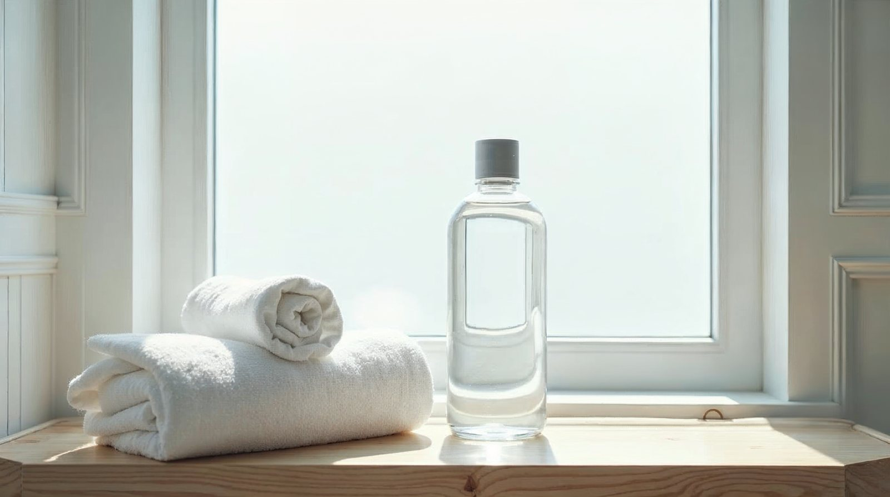
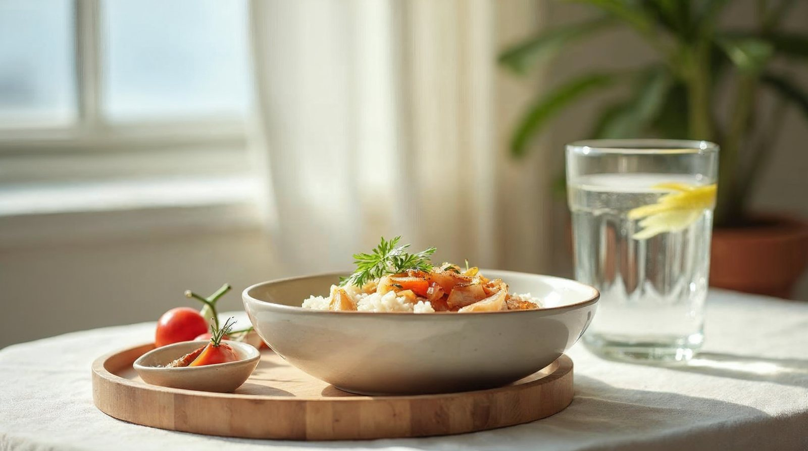
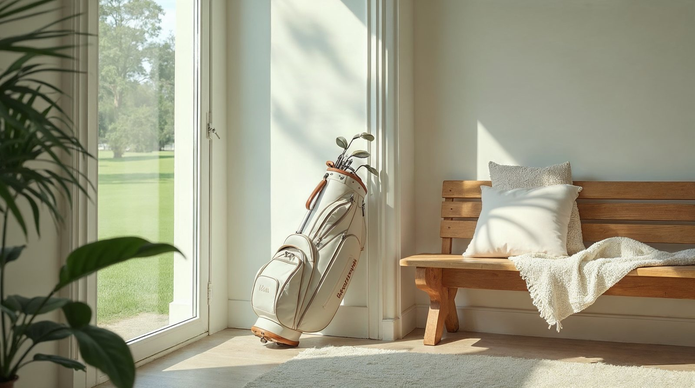
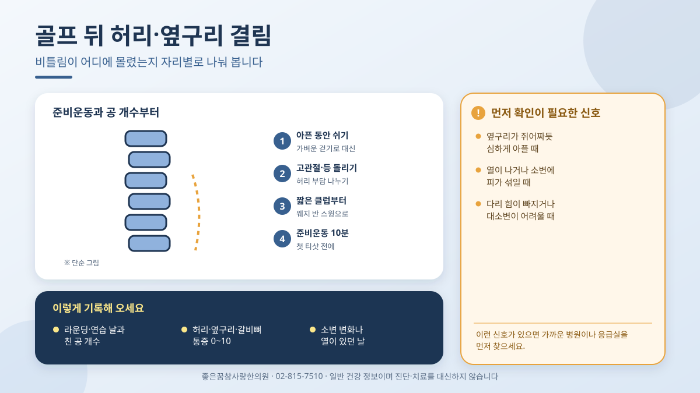

이종호 한의사 감수좋은꿈참사랑한의원 대표원장 (한의사 면허번호 19769)발행 2026-11-26 · 수정 2026-11-27
이 글의 차례
주말 아침 라운딩을 마치고 돌아오는 차 안, 운전대를 돌리려는데 왼쪽 옆구리가 찌릿합니다. 집에 와서 소파에 앉았다 일어나려니 허리 아래쪽도 뻐근하고, 기침을 하니 갈비뼈 아래가 울려요. 연습장에서 공을 몇 박스 친 다음 날 같은 자리가 결렸던 기억도 떠오르실 거예요.
골프 치시는 분들께 진료실에서 이 얘기를 정말 자주 들어요. 허리가 아픈 건지 옆구리가 아픈 건지, 근육이 놀란 건지 갈비뼈를 다친 건지 본인도 헷갈려하시죠. 원래 그래요. 허리와 옆구리는 붙어 있는 데다 같은 스윙에서 함께 쓰이니까 경계가 흐릿하게 느껴지는 게 당연하거든요. 그래서 저는 먼저 아픈 자리를 손바닥으로 짚어 보시라고 부탁드려요.
골프 스윙은 몸통을 크게 비트는 동작을 한 방향으로 수백 번 되풀이하는 운동이에요. 그 비틀림이 허리 아래쪽에 몰리기도 하고, 옆구리 근육과 갈비뼈 쪽에 몰리기도 해요. '허리가 결린 것'과 '옆구리가 결린 것'은 다른 얘기라서, 어디에 몰렸는지에 따라 살필 것과 쉬는 방법이 달라집니다.
왜 하필 한쪽만 아픈지 궁금하시죠? 공을 칠 때마다 같은 방향으로만 몸을 돌리거든요. 반대 방향으로 힘껏 돌릴 일은 거의 없으니, 한쪽에만 피로가 차곡차곡 쌓이는 거예요.
이 글에서는 골프 뒤 허리와 옆구리가 아픈 이유, 자리별로 나눠 보는 법, 콩팥처럼 운동과 상관없는 원인을 구분하는 법, 연습량과 스윙 습관을 어떻게 조절하는지, 한의원에서 함께 살피는 부분을 정리했어요.

골프 스윙은 몸 어디에 부담을 줄까요
골프 스윙은 백스윙에서 몸통을 한쪽으로 크게 감았다가, 다운스윙과 팔로스루에서 짧은 순간에 반대쪽으로 풀어내는 동작입니다. 이때 몸통의 회전은 고관절, 허리, 등, 어깨가 나눠서 맡아야 합니다.
그런데 고관절이나 등이 뻣뻣하면 그만큼의 회전을 허리가 대신 떠맡게 됩니다. 허리 뼈는 원래 많이 돌아가도록 만들어진 구조가 아니라서, 비틀림이 허리 아래쪽에 몰리면 근육과 관절이 쉽게 지칩니다.
옆구리 쪽은 팔로스루에서 몸통이 한쪽으로 크게 기울고 늘어나면서 부담을 받습니다. 갈비뼈 사이 근육과 옆구리 근육이 늘어난 채로 힘을 쓰다가 놀라기도 하고, 드물게는 같은 자리가 반복해서 눌리면서 갈비뼈에 작은 금이 가기도 합니다.
왜 골프 뒤에 허리와 옆구리가 결릴까요
가장 흔한 계기는 연습량입니다. 오랜만에 라운딩을 나갔거나, 연습장에서 쉬지 않고 공을 많이 쳤거나, 대회를 앞두고 연습을 늘린 무렵에 통증이 시작되는 경우가 많습니다. 같은 방향의 비틀림이 짧은 시간에 몰리면 근육이 회복할 틈이 없습니다.
준비운동도 큰 몫을 합니다. 이른 아침 첫 티샷, 추운 날, 차에서 오래 앉아 있다가 바로 스윙하는 상황은 굳은 몸통을 갑자기 크게 돌리게 만듭니다. 첫 몇 홀에서 다쳤다는 분이 많은 것도 그래서입니다. 겨울 라운딩에서 두꺼운 옷을 입고 치면 몸통이 덜 돌아가 팔과 허리로 힘을 쓰게 되기도 합니다.
스윙 습관도 함께 봅니다. 공을 멀리 보내려고 몸을 지나치게 젖히는 피니시, 하체를 고정한 채 상체만 세게 돌리는 스윙, 뒤땅을 쳐서 클럽이 땅에 박힐 때의 충격은 허리와 옆구리에 부담을 더합니다.
평소 생활도 연결되어 있습니다. 오래 앉아 일해 고관절과 등이 굳어 있거나, 배와 엉덩이 근육이 약한 분은 같은 스윙에서도 허리에 부담이 더 몰립니다.
아픈 자리에 따라 어떻게 나눠 보나요
손바닥으로 아픈 자리를 짚어 보면 대략의 방향이 보입니다.
- 허리 아래쪽 가운데나 한쪽이 뻐근하고 앞으로 굽히거나 돌릴 때 아프다: 허리 근육과 관절 쪽을 먼저 생각합니다
- 옆구리 근육이 결리고 몸을 반대쪽으로 기울일 때 당긴다: 옆구리 근육이 놀란 쪽을 생각합니다
- 갈비뼈 한 점을 누르면 찌르듯 아프고 기침이나 깊은 숨에 울린다: 갈비뼈 사이 근육이나 갈비뼈 자체를 함께 봅니다
- 허리에서 엉덩이와 다리로 저리게 뻗친다: 허리 디스크나 신경 쪽을 함께 봅니다
갈비뼈 한 점이 유난히 아프고, 돌아누울 때와 기침할 때 같은 자리가 찌르듯 아프다면 근육보다 갈비뼈 쪽 확인이 먼저 필요할 수 있습니다. 이럴 때는 정형외과에서 사진으로 확인해 보시길 권합니다.
골프와 상관없는 옆구리 통증도 있나요
골프를 친 뒤라서 당연히 운동 때문이라고 생각하기 쉽지만, 옆구리와 등 아래쪽은 콩팥이 자리한 곳이기도 합니다. 그래서 운동과 상관없는 원인을 꼭 함께 떠올려 봅니다.
몸을 움직이지 않아도 쥐어짜듯 아프고 자세를 바꿔도 덜해지지 않는다면, 열이 나거나 소변 색이 붉거나 소변볼 때 불편하다면, 근육보다 콩팥이나 요로 쪽 원인을 먼저 확인해야 합니다. 옆구리 피부에 띠 모양으로 따끔거림이 먼저 오고 며칠 뒤 물집이 생기는 경우도 있습니다.
근육 통증은 대개 특정 동작에서 아프고, 쉬거나 자세를 바꾸면 덜해지며, 누르면 아픈 자리를 짚을 수 있습니다. 이 차이를 기억해 두시면 어디부터 확인할지 정하는 데 도움이 됩니다.
집에서 해 볼 수 있는 간단한 확인
통증이 크게 올라오면 바로 멈추세요.
- 아픈 자리를 손가락으로 눌렀을 때 한 점이 찌르듯 아픈지, 넓게 뻐근한지
- 깊게 숨을 들이쉬거나 기침할 때 같은 자리가 울리는지
- 서서 몸을 좌우로 천천히 돌릴 때 어느 쪽에서 더 아픈지
- 소변 색과 횟수에 변화가 있는지, 열이 나는지
몸을 돌릴 때 아픈 쪽이 스윙 방향과 같은지도 살펴보세요. 오른손잡이라면 왼쪽 옆구리와 오른쪽 허리 아래가 결리는 경우가 많은데, 이 패턴과 다르게 아프다면 다른 원인을 조금 더 생각해 봅니다. 눌러서 아픈 자리를 볼펜으로 살짝 표시해 두시면 며칠 뒤 범위가 줄었는지 비교하기 쉽습니다.
아픈 날은 어떻게 쉬나요
통증이 시작된 첫 하루 이틀은 몸통을 크게 돌리거나 무거운 것을 드는 일을 줄이고, 편한 범위에서 걷기는 이어 갑니다. 완전히 누워만 지내면 오히려 허리가 굳어 다시 움직일 때 더 아플 수 있습니다.
잘 때는 아프지 않은 쪽으로 누워 무릎 사이에 베개를 끼우거나, 똑바로 누워 무릎 아래에 쿠션을 받치면 허리와 옆구리가 덜 당깁니다. 침대에서 일어날 때는 옆으로 돌아누운 뒤 팔로 밀며 일어나는 것이 편합니다.
옆구리 근육이 놀란 경우에는 기침과 재채기가 가장 괴롭습니다. 그 순간 아픈 쪽을 손바닥이나 쿠션으로 살짝 눌러 주면 울림이 덜합니다.
다시 골프를 칠 때는 어떻게 하나요
통증이 가라앉으면 바로 18홀을 도는 것보다 연습장에서 짧은 클럽으로 작은 스윙부터 시작합니다. 웨지로 반 스윙, 그다음 미들 아이언, 마지막에 드라이버 순서로 넓혀 가는 방법이 무리가 적습니다.
연습장에서는 공 사이에 잠깐씩 쉬는 시간을 두고, 한 방향으로만 치다가 중간중간 반대 방향으로 가볍게 빈 스윙을 해 몸통의 균형을 맞춰 주세요. 공 개수를 미리 정해 두는 것도 도움이 됩니다.
라운딩 전에는 고관절 돌리기, 몸통 천천히 비틀기, 가벼운 빈 스윙으로 10분 남짓 몸을 데운 뒤 첫 티샷을 하시길 권합니다. 카트에서 오래 앉아 있다가 바로 치기보다 가볍게 걸어 이동하는 것도 좋습니다.
라운딩 앞뒤의 시간도 허리에 영향을 주나요
라운딩 자체만큼 그 앞뒤의 시간도 허리에 영향을 줍니다. 골프장까지 한두 시간 운전하고 내려 바로 연습 그린으로 가면, 굳은 허리와 고관절로 첫 스윙을 하게 됩니다. 도착하면 차에서 내려 몇 분이라도 걸으며 몸을 펴 주세요.
무거운 골프백을 트렁크에서 꺼내고 넣는 동작도 허리를 다치기 쉬운 순간입니다. 허리만 굽혀 들어 올리기보다 무릎을 함께 굽히고 백을 몸에 붙여 드는 것이 좋습니다. 라운딩을 마친 뒤에는 지친 몸으로 다시 오래 운전하게 되니, 중간에 한 번 쉬어 허리를 펴 주시길 권합니다.
라운딩 뒤 사우나에서 오래 몸을 데우고 바로 술자리로 이어지는 일정은, 근육이 놀란 날이라면 붓기와 결림을 키울 수 있습니다. 통증이 있는 날에는 따뜻한 샤워 정도로 마무리하고 일찍 쉬는 편이 다음 날 몸이 편합니다.
스윙을 바꾸면 허리 부담이 줄어드나요
허리와 옆구리 통증이 되풀이된다면 스윙의 모양도 한번 점검해 볼 만합니다. 하체와 고관절이 회전을 함께 맡아 주는 스윙, 피니시에서 허리를 지나치게 뒤로 젖히지 않는 자세는 허리에 몰리는 비틀림을 덜어 줍니다.
스윙 교정은 레슨 선생님께 받으시는 것이 가장 정확합니다. 진료실에서는 그 바탕이 되는 몸의 조건, 즉 고관절이 얼마나 돌아가는지, 등이 얼마나 열리는지, 좌우 차이가 어떤지를 함께 살펴 알려 드립니다. 몸의 조건과 스윙이 함께 맞춰질 때 부담이 가장 많이 줄어듭니다.
먼저 이렇게 여쭙니다
처음 오시면 대략 이런 순서로 여쭙니다. 미리 떠올려 오시면 이야기가 훨씬 수월해집니다.
- 아픈 자리는 허리 아래쪽인가요, 옆구리인가요, 갈비뼈 쪽인가요?
- 라운딩과 연습은 일주일에 몇 번, 공은 대략 몇 개 치시나요?
- 통증이 시작된 무렵 연습량이나 스윙에 변화가 있었나요?
- 기침이나 깊은 숨, 돌아눕기에 같은 자리가 아픈가요?
- 소변 색이나 횟수 변화, 열은 없었나요?
- 다리로 저리게 뻗치는 느낌이 있나요?
드시는 약, 특히 피를 묽게 하는 약이나 진통제가 있다면 처음에 알려 주세요. 처방받은 약은 처방한 선생님과 상의 없이 끊지 않습니다.
일상에서 먼저 해 볼 수 있는 것
- 아픈 동안은 라운딩과 연습을 잠시 쉬고 가벼운 걷기로 대신하기
- 열감이 있으면 차가운 찜질, 뻣뻣함만 남으면 따뜻한 찜질
- 기침이나 재채기할 때 아픈 옆구리를 베개로 살짝 감싸 누르기
- 고관절과 등을 천천히 돌리는 움직임으로 허리 부담 나누기
- 배와 엉덩이 근육을 깨우는 가벼운 운동 하기
- 오래 앉아 있을 때는 한 시간에 한 번 일어나기
등을 돌리는 움직임은 옆으로 누워 무릎을 구부린 채 위쪽 팔을 천천히 반대쪽으로 펼쳐 열어 주는 동작이 편합니다. 허리를 억지로 비틀기보다 가슴을 여는 느낌으로 하시면 됩니다.
한의원에서 함께 살필 수 있는 경우
- 골프 뒤 허리 아래쪽이나 옆구리 결림이 며칠씩 이어지는 경우
- 고관절과 등이 굳어 스윙 때마다 허리에 부담이 몰리는 경우
- 한쪽 방향 회전만 되풀이해 몸통 좌우가 다르게 뻣뻣한 경우
- 라운딩 다음 날마다 같은 자리가 결려 다시 치기가 걱정되는 경우
- 운동 복귀 순서와 연습량을 함께 정하고 싶은 경우
좋은꿈참사랑한의원에 오시면 먼저 아래 '먼저 확인이 필요한' 신호가 없는지부터 봅니다. 그다음 허리, 옆구리, 갈비뼈, 고관절을 함께 만져 보고, 몸통을 돌리고 기울이는 움직임을 좌우로 비교합니다. 필요하다고 판단되면 체형 검사로 골반과 어깨의 기울기를 함께 살펴보기도 합니다.
진찰한 내용을 바탕으로 침이나 약침, 온열 관리, 추나 상담, 집에서 할 운동 가운데 지금 상태에 맞는 것을 정합니다. 한약은 피로와 잠이 함께 문제일 때 드시는 약을 확인한 뒤 신중히 상의합니다. 갈비뼈나 콩팥 쪽이 의심되면 해당 진료과를 먼저 권합니다.

이렇게 기록해 오시면 상담이 쉬워집니다
- 라운딩이나 연습한 날, 친 공의 대략 개수
- 허리, 옆구리, 갈비뼈 통증을 각각 0~10으로
- 기침이나 깊은 숨, 돌아눕기에 아팠던 날
- 준비운동을 한 날과 하지 않은 날
- 소변 색 변화나 열이 있었던 날
기록을 나란히 놓고 보면 어떤 연습 뒤에 어느 자리가 아픈지, 준비운동이 얼마나 차이를 만드는지가 보입니다. 빠진 날이 있어도 괜찮습니다. 두세 번의 라운딩만 적어도 몸이 보내는 신호의 흐름이 보이기 시작하고, 그것이 연습량을 다시 짜는 실마리가 됩니다.

오래 골프를 즐기기 위해
골프는 나이가 들어도 오래 즐길 수 있는 운동이에요. 저는 골프를 그만두시라고 말씀드리지 않아요. 좋아하는 걸 못 하게 하는 게 아니라, 계속 치시면서 허리와 옆구리를 아끼는 방법을 같이 찾는 게 제 일이라고 생각하거든요.
통증을 참고 치는 것과 몸이 보내는 신호에 맞춰 치는 건 다른 얘기예요. 한 번에 공을 몰아서 많이 치는 날보다 적게라도 자주 치는 날이 허리에는 덜 부담이 되는 경우가 많아요. 연습도 세게 몰아서보다 약하게, 오래 가는 쪽이 몸에 잘 맞거든요.
뭉친 근육과 굳은 몸통을 살피는 건 제가 맡을게요. 대신 하나만 부탁드려요. 연습장에 가시면 칠 공 개수를 먼저 정해 두고, 그만큼만 치고 나와 주세요. 딴 건 하시던 대로 편하게 하셔도 돼요.
다음에 오시면 기록을 같이 보면서 다음 걸음을 정할게요. 궁금한 건 그냥 편하게 물어보세요. 다음 시즌도 즐겁게 치실 수 있게 곁에서 도와드리겠습니다.
이런 증상은 먼저 확인이 필요합니다
- 옆구리가 쥐어짜듯 심하게 아프면서 열이 나거나 소변에 피가 섞이는 경우
- 다리에 힘이 빠지거나 감각이 둔해지고 대소변 조절이 어려워지는 경우
이런 신호가 있으면 한의원보다 가까운 병원이나 응급실을 먼저 찾으세요.
함께 읽으면 좋은 글
- 골프 스윙을 한 뒤 허리가 비틀리듯 아픈 것은 어떻게 살피나요?
- 옆구리가 결리고 아플 때 근육·갈비뼈·콩팥·피부 가운데 어디서 오는지 어떻게 나눠 살피나요?
- 옆구리와 등 뒤쪽이 아플 때 근육 문제인지 어떻게 구분해서 보나요?
- 공원 야외 운동기구로 허리를 돌리다가 아파졌을 때는 어떻게 하나요?
- 팔꿈치 바깥쪽·안쪽이 시큰한 테니스엘보와 골프엘보는 어떻게 살피나요?

여쭙는 것
- 아픈 자리는 허리 아래쪽인가요, 옆구리인가요, 갈비뼈 쪽인가요?
- 라운딩과 연습은 일주일에 몇 번, 공은 대략 몇 개 치시나요?
- 통증이 시작된 무렵 연습량이나 스윙에 변화가 있었나요?
생활에서 해 볼 것
- 아픈 동안은 라운딩과 연습을 잠시 쉬고 가벼운 걷기로 대신하기
- 열감이 있으면 차가운 찜질, 뻣뻣함만 남으면 따뜻한 찜질
- 기침이나 재채기할 때 아픈 옆구리를 베개로 살짝 감싸 누르기
한의원에서 함께 살필 것
- 골프 뒤 허리 아래쪽이나 옆구리 결림이 며칠씩 이어지는 경우
- 고관절과 등이 굳어 스윙 때마다 허리에 부담이 몰리는 경우
- 한쪽 방향 회전만 되풀이해 몸통 좌우가 다르게 뻣뻣한 경우
먼저 확인이 필요한 신호
- 옆구리가 쥐어짜듯 심하게 아프면서 열이 나거나 소변에 피가 섞이는 경우
- 다리에 힘이 빠지거나 감각이 둔해지고 대소변 조절이 어려워지는 경우
한눈에 보는 표
| 구분 | 핵심 |
|---|---|
| 여쭙는 것 | 아픈 자리는 허리 아래쪽인가요, 옆구리인가요, 갈비뼈 쪽인가요? 라운딩과 연습은 일주일에 몇 번, 공은 대략 몇 개 치시나요? |
| 생활에서 해 볼 것 | 아픈 동안은 라운딩과 연습을 잠시 쉬고 가벼운 걷기로 대신하기 열감이 있으면 차가운 찜질, 뻣뻣함만 남으면 따뜻한 찜질 |
| 한의원에서 함께 살필 것 | 골프 뒤 허리 아래쪽이나 옆구리 결림이 며칠씩 이어지는 경우 고관절과 등이 굳어 스윙 때마다 허리에 부담이 몰리는 경우 |
| 먼저 확인이 필요한 신호 | 옆구리가 쥐어짜듯 심하게 아프면서 열이 나거나 소변에 피가 섞이는 경우 다리에 힘이 빠지거나 감각이 둔해지고 대소변 조절이 어려워지는 경우 |
자주 묻는 질문
골프 치고 옆구리가 아픈데 파스만 붙여도 되나요?
가벼운 근육 결림이라면 쉬면서 찜질과 함께 지켜볼 수 있습니다. 다만 갈비뼈 한 점이 찌르듯 아프거나 기침에 울리면 갈비뼈 확인이 필요할 수 있고, 열이나 소변 변화가 있으면 병원 진료를 먼저 받으세요.
아파도 공을 살살 치면 괜찮지 않나요?
통증이 있는 동안 같은 방향의 비틀림을 되풀이하면 회복이 늦어질 수 있습니다. 통증이 가라앉은 뒤 짧은 클럽의 작은 스윙부터 다시 시작하시길 권합니다.
허리 보호대를 차고 골프를 쳐도 되나요?
처음 복귀할 때 불안감을 덜어 주는 데 쓰일 수 있습니다. 다만 보호대에 오래 기대면 몸통 근육이 덜 쓰일 수 있어, 배와 엉덩이 근육 운동을 함께 챙기는 것이 좋습니다.
추나로 스윙 때 허리 부담을 줄일 수 있나요?
진찰로 고관절, 골반, 등의 움직임을 확인한 뒤 추나가 맞는지 상의해 정합니다. 스윙 자체는 레슨 선생님과 함께 점검하시면 더 도움이 됩니다.
라운딩 다음 날마다 같은 자리가 결리는데 괜찮은가요?
같은 자리가 되풀이해서 결린다면 연습량과 준비운동, 고관절과 등의 유연성을 함께 살펴볼 때입니다. 기록을 가져오시면 어디부터 바꿀지 함께 정할 수 있습니다.
좋은꿈참사랑한의원은 재진 때 지난번 이야기부터 이어서 여쭙니다. 진료시간과 예약은 오시는 길에서 확인하세요.
어디서 상담받을 수 있나요?
좋은꿈참사랑한의원은 서울 동작구 만양로2길 2 신성빌딩 3층·5층(서울 동작구 상도동, 7호선 상도역 3번 출구 근처)에 있습니다. 한의사 3명(이종호 대표원장, 조영기 수석진료원장, 정원영 진료원장)이 진료합니다. 진료시간은 평일 09:30~20:00(점심 13:00~14:00), 토·일·공휴일 09:30~15:00이며, 방문 전 전화로 확인을 권합니다. 예약은 네이버 예약, 카카오톡 상담, 전화 02-815-7510로 받습니다.
이 글은 일반적인 건강 정보이며 개인의 진단이나 치료를 대신하지 않습니다. 증상이 있거나 복용 중인 약이 있다면 진료를 통해 확인하세요. 치료 효과는 개인마다 다를 수 있습니다.
작성 기준: 일반적으로 알려져 있는 건강 정보를 참고해 정리했습니다(대표원장 감수). 증상 기록은 1~2주 동안 하루 1회, 비슷한 시간에 적어 오시면 지난 상태와 비교하기 쉽습니다.